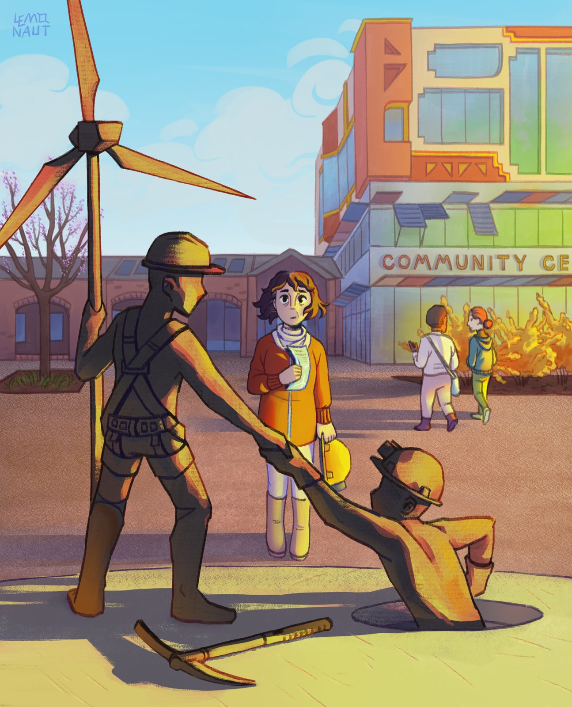

References / Illustration / 539
Solarpunk community center
A miners’ memorial statue holds a wind turbine in front of a community centre that retrains miners as turbine technicians.
- Source
- Wikimedia Commons: File:Solarpunk community center.png
- Creator
- The.lemonaut.ukr
- Made
- 2024
- Style
- Solarpunk (agent-proposed, not yet reviewed by a person)
- Moods
- Hopeful, communal, sunlit
- Evidence
- Downloaded and inspected the Commons file (original 2284 × 2823 px PNG, viewed at 1295 × 1600 px).
- Reviewed
- Rights
- Open license, stored. License: CC-BY-4.0. Rights policy

Context
The uploader describes it as a digital illustration of a solarpunk community centre that provides re-specialization for miners so that they can become wind turbine technicians. It is dated 5 July 2024. Commons file page.
Observed
- In the foreground, a bronze statue of a miner in a helmet and harness pulls a second miner out of a manhole. The standing figure holds a small three-bladed wind turbine like a staff, and a pickaxe lies on the ground.
- A girl in an orange coat with a yellow helmet and a paper in her hand looks at the statue.
- Behind, a building with orange, cream, and glass blocks carries the sign “COMMUNITY CE…”, small solar panels on brackets, and a hedge of flowering shrubs.
- At left, an older brick hall has round-arched windows, and a tree has pale violet blossom.
- The sky is light blue with soft white clouds. Thin dark outlines, flat colour, and a visible grain texture.
Why it belongs
The scene puts the politics of solarpunk (a fair transition for workers) into a civic square. Old labour and new energy share one monument.
The palette leans orange and bronze, so the image is a partial fit to the green, blue, and gold grammar. The blue sky and the visible renewables keep it in the style.
Borrow
Combine a familiar civic form (a monument, a town square) with renewable technology, so the change reads as continuity.
Measured
Machine-extracted by tools/image-traits.py on . Full measurement.
- Mean chroma
- 0.24
- Palette
- #c8e1e8 10%
- #c38f70 10%
- #89d5ee 9%
- #d5d276 7%
- #362f33 6%
- #5d5765 5%
- #d1bf6e 4%
- #cc9843 4%

